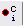

{kind=link}
Picking tutorial for Tomography with Dynamo in Scipion
This page will be focused on the basic usage of the plugin scipion-em-dynamo for particle picking. The tutorial will cover from the picking step to the extraction of the coordinates selected in the tomogram, including some useful tools to complement the protocols involved in the picking workflows.
Table of Contents
Additional resources
Here you can find some valuable resources to complement the contents described in the tutorial:
Where to find the protocols?
Protocols needed to perform and analyze pickings are available in the following plugins:
scipion-em-tomo3d
scipion-em-dynamo
scipion-em-tomoviz
scipion-em-xmipptomo
It is worth mentioning that all these plugins strongly depend on the scipion-em-tomo plugin, which should be installed before any of the earlier mentioned Plugins.
Picking strategies in Scipion for Tomography
Currently, we have implemented two different picking strategies that can be applied to your dataset:
Directional picking
Non-directional picking
The main difference between the two is the information they can extract on the particle’s orientation found in your tomograms.
Non-directional pickings are the direct extension of common SPA pickings to the third dimension. Consequently, the selected coordinates will only include information on the spatial location of a specific particle in a tomogram.
On the other hand, directional pickings will provide both the spatial location of the particle in the tomogram, and the initial orientation of that particle referred to another structure like a membrane. Thanks to this initial alignment, it is possible to simplify further steps in the workflow.
Deciding which strategy suits your data better depends on the conditions of the particles inside the tomogram. In general, suspended particles are better handled by non-directional pickings, while particles close or attached to a vesicle or describing specific geometries are more easily analyzed by directional pickings.
Preliminary steps
If you are new to Scipion, we strongly suggest that you follow this Scipion tutorial to learn how to navigate and work with the interface of Scipion. In the previous tutorial, you will find how to look for and create new protocols, together with some examples of SPA workflows.
Directional picking tutorial
The following sections will describe the procedure to pick oriented particles with Dynamo software inside Scipion. The data analyzed during the tutorial is available here.
Step 0: Importing the data and denoising the data
Firstly, we need to import our tomograms inside Scipion with any import protocols available. We will use the import protocol implemented inside scipion-em-tomo for this tutorial.
The parameters to be filled up in the form of the protocol are the following:
- Import section
Files directory: Path to the directory which contains the tomogram file. If it’s only one file, the whole path including the file can be provided in this field.
Pattern: it can be used with wildcards (*) for more complex files location, like multiple directories or files.
Sampling rate: sampling rate of the tomograms expressed in A/px. For this tutorial, we can set it to 1.0
Origin info section: By default, Scipion sets the origin of the coordinates for each tomogram on its gravity center. However, this section allows you to select any other location for the origin. For this tutorial, we will use the default value
Acquisition info section: Here, you can specify the acquisition conditions that led to the reconstructed tomogram being imported. Apart from the maximum/minimum acquisition angles, step, and principal tilt axis, Dynamo allows selecting a second tilt axis used during some acquisitions. For this tutorial, we will use the default value
To make the manual picking be easier, we are going to denoise the tomogram. To do that, open the protocol “denoise tomogram” from plugin scipion-em-tomo3d. Once there, click on the magnifier icon and select, on the pop-up window the pointer to the imported tomogram. Then, set the threads to 12 to make the execution be faster. Leave the rest of parameters with the default values and click execute the protocol.
{kind=link}
If we analyze the results, it can be observed how the contrast has been considerably increased, being the figure on the left the tomogram before the denoising and the one on the right after the denoising.
{kind=link}
Step 1: Defining a membrane geometry with Dynamo
We can move now to the picking steps of the particles found in the tomogram we have just imported and binned.
The picking process in the Dynamo plugin is divided into two different protocols:
Dynamo - vectorial picking: This protocol can be used to select particles and define geometries (such as vesicles or membranes) in your tomograms. The picking process is primarily manual, with some semiautomatic steps available for specific geometries.
Dynamo - model workflow: This protocol takes a previously defined picking/geometry and generates a series of coordinates that can be afterward extracted.
Following the Dynamo convention, the first protocol described before can be applied to define the Dynamo “user points.” These coordinates are not meant to be extracted. Instead, they initialize the definition of geometries that Dynamo will use to extract actual “cropping points” or extractable coordinates.
The second protocol will take your “user points” to define the geometry and extract equally spaced “cropping points” from it. In addition, Dynamo can assign orientations to the final “cropping points” based on the geometry that it computes.
Let’s define several “user points” using the dynamo - vectorial picking protocol. The parameters to be supplied to this program are the following:
- Input section
Input tomograms: Scipion SetOfTomograms object generated by the previous binning protocol.
Box Size: Estimated box size for the future particles. At this point, this parameter is just an estimation, and it can be modified after in the workflow if needed. For this tutorial, we will use a box size of 64.
Modify previous meshes: If set to yes, you will be able to pass the protocol a previous picking to refine it. For this tutorial, we will leave the default value.
Model type: Here, you can determine the type of geometry that will define your coordinates. Again, for this tutorial, we will leave the default value.
After running the protocol, you will be prompt with a dialog showing the different tomograms available in the imported set. The dialog also describes the picking status of the tomograms and the number of coordinates associated with each. To launch the interface of Dynamo for a given tomogram, you can double click on one of the entries inside this dialog.
Note: depending on the size of your tomograms, the loading time of the interface may be slower.
{kind=link}
Now you should see Dynamo’s dtmslice interface for the double-clicked tomogram. This interface includes several valuable tools that can be used to inspect and select “user points.” However, only a few of these tools are needed to generate the information expected by Scipion.
{kind=link}
The steps to be followed to select your user points are the following:
Create a new Dynamo model: Model Pool ➤ Create new model in pool (choose type). Inside this menu, you can choose any Dynamo model. However, remember that Scipion will rewrite your Model to the type you chose in the form. Thus, we recommend choosing the same type here. For this tutorial, create a General model
- Basic dtmslice controls:
Mouse wheel ➤ Change tomogram slice
X, Y, or Z keys ➤ Alternate between X, Y, or Z slices in the viewer
C key ➤ Pick an “user point” in the current mouse location (Note: Sometimes the picked particle might appear displaced with respect to the location of your mouse. This is a known MatLab issue, which is usually solved by minimizing/maximizing the dtmslice window)
Delete key ➤ Remove last picked coordinate (Note: You can delete a specific coordinate by right-clicking on it and selecting Delete point: X in the prompted menu)
Mouse wheel + Ctrl key ➤ Zoom the view in our out
Mouse left click + C key ➤ Rotate the view in any direction
Mouse left click + Shift key ➤ Pan the view in any direction
Other useful actions are available here.
The user points can be selected in the 3D view or in a 2d slices montage. For this tutorial, we will use the second method. Let us create a new montage view to define our membrane. First, you will need to click in Montage ➤ Create Montage of full depicted scene. The other option in the Montage menu will allow you to customize the settings of this view, such as the number of slices displayed.
{kind=link}
Inside the montage view, you can still create models as you did in the 3D viewer we used before. Also, you can change the slice in this view using the buttons at the bottom of the window.
The following steps describe how to pick in the montage view:
For a better data visualization, click on the Contrast filter (gaussian) icon
Use the single arrows located at the bottom left to go to the slices that provide the best view of the specimen/s desired to be picked.
It can be observed that when the mouse is located in any of the slices displayed, a set of icons appear at the top right of it. They offer actions that can be very useful to perform a better picking, like zooming in and ou, click and drag, etc.
For each vesicle, we will pick the membrane in different slices, as can be observed in the figure below.
Click on the Toggle icon 
Left click in the desired region of a given slice to place a new “user point”
To identify the points of another vesicle with a different class, go to menu Model Pool ➤ Create new model in pool (choose type)
{kind=link}
{kind=link}
{kind=link}
{kind=link}
Selections in this view can be deleted by following the procedure described for the 3D view.
Note: Another attractive property of the montage view is the possibility of automatically “tracking” the membrane after several slices have been picked. To do so, activate the next slice (i.e., click it so that its frame becomes red), and press the O key.
Before exiting the montage view, we need to define an extra point so Dynamo can orient the particles properly. This new marker will tell Dynamo which side of the membrane is the interior and exterior. You can use the Shift key + C key in the desired region to place this marker. Note: Orientations are defined pointing towards the outer part of the membrane (i.e., the opposite side of the membrane with respect to the area where we place the previous marker).

Once you define the membrane on several slices, you can close the montage view window. Then, you will be able to see your membrane automatically on the 3D view to do any refinement you may consider appropriate.
{kind=link}
If you are happy with your results, you can close the dtmslice window, wait until the Scipion tomo dialog is updated with the information of your picking, and register the output in Scipion. As a reference, we picked around 166 different locations along different slices in the montage view.
We now have all the information we need to extract your initially picked “user points” based on the orientation described by the geometry of the membrane we have just defined. To that end, we will combine the output of both picking protocols with the dynamo - model workflow protocol.
Step 2: Orienting particles in Dynamo - Cropping points
At this moment, Scipion has stored separately the two different geometries picked with the Dynamo dtmslice tool. The next step is to use the previous information to generate a directional picking with coordinates extracted posteriorly.
The protocol in charge of imparting orientations to models and generating extractable coordinates (referred to as “cropping points” in Dynamo) is the dynamo - model workflow protocol. The parameters included in the form of this protocol are described below:
- Input section:
Input Meshes: Output Scipion SetOfMeshes object generated by the dynamo - vectorial picking protocol. These meshes will be used to generate the extractable coordinates. If the meshes are not coming from a General model, they will also impart orientations to themselves. For this tutorial, select the SetOfMeshes created during the first picking protocol (General model)
Box Size: Estimated box size for the future particles. At this point, this parameter is just an estimation, and it can be modified after in the workflow if needed. For this tutorial, we will use a box size of 64.
Model type: Model type associated with the Input Meshes. It can be either the same model type chosen during the picking step or a different one. However, we recommend selecting the same model type for both protocols. For this tutorial, choose Ellipsoidal Vesicle
Mesh parameter: set it to 2 (explained below).
Cropping parameter: set it to 5 (explained below).
The remaining parameters are specific to each Dynamo model. Most of them will determine how smooth will be the mesh generated to give orientations to the particles and extract the “cropping points.” However, the softer the geometry, the more points will be extracted, which may decrease the performance of future workflow steps.
Below you can find a brief description of the parameters associated with a General model. It is worth mentioning that a short description of all these parameters is also available in the protocols.
Mesh parameter: This parameter will determine the initial number of triangles to be used to generate a mesh in Dynamo. The smaller the parameter, the higher the number of triangles. For this tutorial, we will use the default value
Maximum number of triangles: This parameter will limit the number of triangles that the Dynamo mesh will have. For this tutorial, we will use the default value
Cropping parameter: Number of times the triangles in the mesh will be split into different triangles. This will increase the smoothness of the final geometry. For this tutorial, we will use the default value
{kind=link}
Unlike the dynamo - vectorial picking, this protocol is not interactive. Therefore, it will automatically register an oriented SetOfCoordinates3D in Scipion that can be extracted afterward.
Step 3: Checking 3D coordinates in Scipion
At this point, you might be interested in checking the coordinates you have already picked and their orientations. To that end, you can use one of the three viewers available in Scipion to check 3D coordinates. The viewers currently available are the following:
Tomoviz viewer (available in scipion-em-tomoviz plugin): This viewer offers a 3D view of coordinates, orientations, and tomograms. It is helpful to check the coordinates and directions without losing the context provided by your tomogram. In addition, the viewer offers an interactive mode to remove unwanted coordinates.
Eman viewer (available in scipion-em-emantomo plugin): This viewer relies on the Eman boxing interface to show a sliced view of the tomograms and their associated coordinates. It also offers a window to see a 2D preview of the subtomograms to be extracted.
Dynamo viewer (available in scipion-em-dynamo plugin): This viewer relies on the Dynamo dtmslice interface described before in this tutorial. Therefore, you can use any of the tools implemented in this tool to modify or check your coordinates
Since we would like to check the orientation of the coordinates, we recommend using the viewer offered in scipion-em-tomoviz. If you have this plugin installed, you can open it by clicking on  .
.
Suppose you want to choose any other viewer. In that case, you can right-click on any output/input object found in the summary section of the Scipion interface to get a list of the available viewers for that specific Scipion object.
As it happened with the picking protocol, you will be prompted with a tomogram dialog showing the picked tomograms and their associated coordinates. By double-clicking on any of these entries, you will open the viewer for that specific tomogram.
Apart from buttons and menus displayed in the viewer window, the following navigation tools are also available:
X, Y, or Z key: Switch the view to see a Z (top), X (front), or Y (side) view of the scene
Up/Down arrow keys: Change a single slice of the tomogram when the slice view is activated. The Up key moves the slice in the direction of the white arrow shown in the slice view. The Down key moves the slice in the opposite direction of the arrow
O key: return to the default view when the slice view is activated.
{kind=link}
Step 5: From coordinates to subtomograms
Now that you have generated and checked your oriented SetOfCoordinates3D, we can proceed to extract those locations in the tomogram to create a SetOfSubtomograms. To that end, we will the extraction implemented in the Dynamo plugin called dynamo - vectorial extraction. The parameters to be filled up in the form of the protocol are the following:
- Input section
Input coordinates: Output Scipion SetOfCoordinates3D object generated by a picking protocol. For this tutorial, select the output previously generated by the protocol dynamo - model workflow
Tomogram source: Determine if the subtomomgrams will be extracted either from the tomogram used to pick the coordinates or from another tomogram (for example, this option is usually useful to re-extract the coordinates at a different binning). For this tutorial, we will use the same as picking option
Box size: Final size of the subtomograms. If you click on the button, Scipion will automatically set this parameter to match the box size previously set for the coordinates. For this tutorial, we will use a box size of 32
Downsampling factor: When this parameter is bigger than 1.0, the final subtomogram size will be reduced by a factor equal to this parameter. We will use the default value of 1.0 (i.e., no downsampling)
- Preprocess section
Invert contrast?: Determine if you want to invert the contrast of your subtomograms with respect to the contrast of your tomograms. We will use the default value No for this tutorial
Apart from the previously described parameters, you can also specify the number of threads involved in the coordinates extraction to reduce the execution time.
Once the protocol is finished, Scipion will generate a SetOfSubtomograms that you can further process in the Subtomogram averaging pipeline. If you want to check how the subtomograms look, click on as we did for the coordinates. This will open an interface that will allow you to inspect your subtomograms.
{kind=link}
Congratulations, you have finished the directional picking tutorial of Scipion with Dynamo! The following section will describe the advantage of having oriented particles vs. non-oriented particles and how these orientations may impact further steps of the workflow. You can also move to the Non-directional picking tutorial if you are interested in learning more about this other picking strategy in the Scipion framework.
Step 6: Prealigment of subtomograms
The main advantage of working with oriented coordinates is that the subtomograms extracted from them will inherit this same orientation. Thus, whenever we go to a refinement protocol, we can use this information as an initial guess of the alignment, making the process more reliable, accurate, and faster.
Another practical possibility is applying this initial alignment to the subtomograms. In this way, we can draw initial conclusions on our data or decide if some refinement of the picking steps is needed.
It is worth mentioning that these alignments will not consider the in-plane rotational alignment of the samples. This implies that, after applying the alignment of the subtomograms, the volumes will be aligned to a common axis (usually the Z-axis). However, rotations associated with this common axis will not be corrected.
To apply the alignment stored in the SetOfSubtomograms metadata, we can use the protocol xmipptomo - apply alignment to subtomo available in scipion-em-xmipptomo plugin.
{kind=link}
This protocol has a single input parameter in the form, corresponding to a Scipion SetOfSubtomograms object. We will use the subtomograms generated previously by the dynamo - vectorial extraction as input.
This protocol will generate two different outputs:
Subtomogram average
SetOfSubtomograms with the alignment applied
You can visualize both outputs by clicking on . Thanks to the average, you can check that there is already some blurry density, which is a good way of checking if the picking protocols worked as expected.

Below, you can find an overall view of the Scipion workflow described during the Directional picking tutorial.
{kind=link}